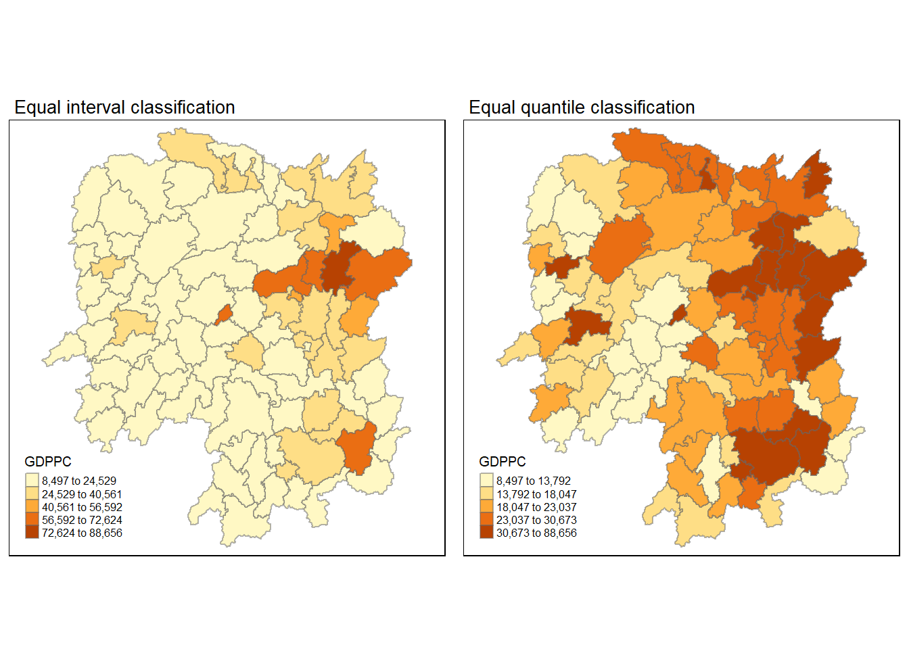
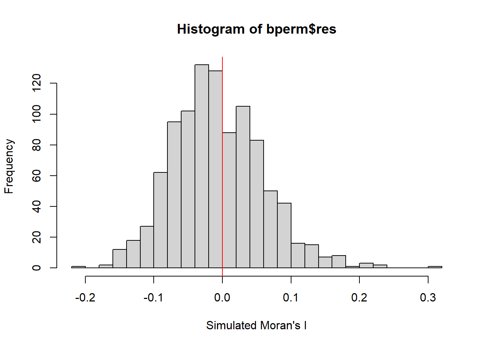
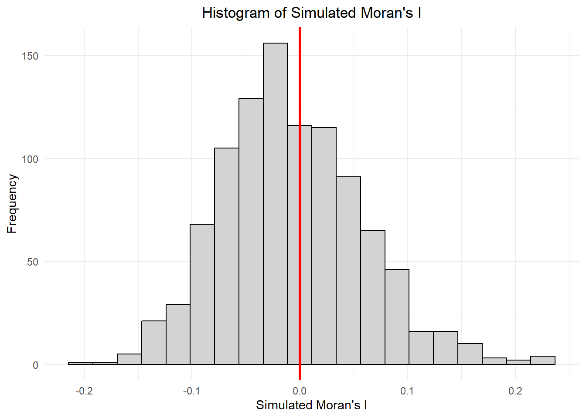
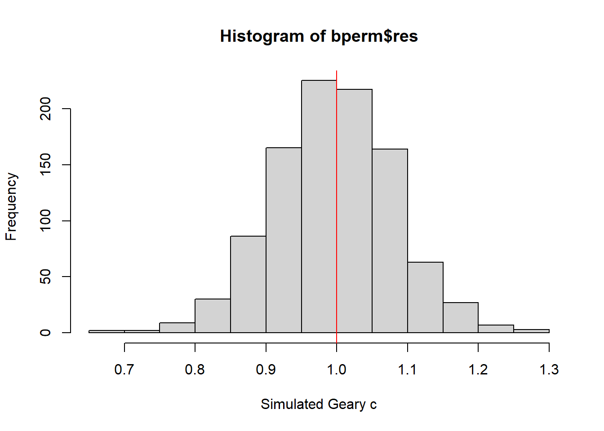
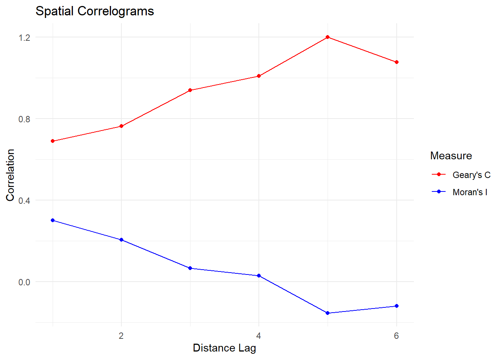

pacman::p_load(sf, spdep, tmap, tidyverse)Hands-on Exercise 6
Part 1: Global Measures of Spatial Autocorrelation
In this exercise, we explore ways to compute Global Measures of Spatial Autocorrelation (GMSA):
- Compute GSA statistics using appropraite functions in the spdep functions
- Plotting Moran scatterplot and Moran’s I correlogram
- Compute Moran’s I and Geary’s C
- Provide statistically correct interpretations of GSA statistics
Getting Started
Import Geospatial Data
hunan <- st_read(dsn = "data/geospatial",
layer = "Hunan")Reading layer `Hunan' from data source
`C:\Users\Home\Desktop\bjyeo\IS415-GeospatialAnalytics\HandsOnEx\Ex06\data\geospatial'
using driver `ESRI Shapefile'
Simple feature collection with 88 features and 7 fields
Geometry type: POLYGON
Dimension: XY
Bounding box: xmin: 108.7831 ymin: 24.6342 xmax: 114.2544 ymax: 30.12812
Geodetic CRS: WGS 84hunan2012 <- read_csv("data/aspatial/Hunan_2012.csv")Rows: 88 Columns: 29
── Column specification ────────────────────────────────────────────────────────
Delimiter: ","
chr (2): County, City
dbl (27): avg_wage, deposite, FAI, Gov_Rev, Gov_Exp, GDP, GDPPC, GIO, Loan, ...
ℹ Use `spec()` to retrieve the full column specification for this data.
ℹ Specify the column types or set `show_col_types = FALSE` to quiet this message.hunan <- left_join(hunan,hunan2012) %>%
select(1:4, 7, 15)Joining with `by = join_by(County)`Visualizing Regional Development Indicator
equal <- tm_shape(hunan) +
tm_fill("GDPPC",
n = 5,
style = "equal") +
tm_borders(alpha = 0.5) +
tm_layout(main.title = "Equal interval classification",
main.title.size = 0.85,
legend.title.size = 0.75,
legend.text.size = 0.5,)
quantile <- tm_shape(hunan) +
tm_fill("GDPPC",
n = 5,
style = "quantile") +
tm_borders(alpha = 0.5) +
tm_layout(main.title = "Equal quantile classification",
main.title.size = 0.85,
legend.title.size = 0.75,
legend.text.size = 0.5,)
tmap_arrange(equal,
quantile,
asp=1,
ncol=2)
Chloropleth Map Observations
In the two maps above, we visualize the GDPPC in Hunan province using two different classification methods: equal interval and quantile. In the left map, we use equal interval classification to divide the data into 5 classes. In the right map, we use quantile classification to divide the data into 5 classes.
Notice that the two maps show different patterns of regional development. The equal interval classification map shows that the highest GDPPC values are concentrated in the central and eastern parts of the province, while the quantile classification map shows that the highest GDPPC values are concentrated in the central and southern parts of the province.
Global Measures of Spatial Autocorrelation
Computing Contiguity Spatial Weights
Before computing GSA, we need to construct a spatial weights of the study area. As we learnt in last week’s exercise, we can use the poly2nb function to create a spatial weights matrix based on polygon contiguity.
We can use the Queen contiguity criterion to define neighbors. This criterion considers two polygons as neighbors if they share a common boundary or a vertex.
wm_q <- poly2nb(hunan,
queen=TRUE)
summary(wm_q)Neighbour list object:
Number of regions: 88
Number of nonzero links: 448
Percentage nonzero weights: 5.785124
Average number of links: 5.090909
Link number distribution:
1 2 3 4 5 6 7 8 9 11
2 2 12 16 24 14 11 4 2 1
2 least connected regions:
30 65 with 1 link
1 most connected region:
85 with 11 linksRow-standardized weights matrix
rswm_q <- nb2listw(wm_q,
style="W",
zero.policy = TRUE)
rswm_qCharacteristics of weights list object:
Neighbour list object:
Number of regions: 88
Number of nonzero links: 448
Percentage nonzero weights: 5.785124
Average number of links: 5.090909
Weights style: W
Weights constants summary:
n nn S0 S1 S2
W 88 7744 88 37.86334 365.9147
Spatial Weights Matrix Observations
The distribution of connections gives us an idea of Hunan’s spatial structure. The variation in the number of links suggests a diverse spatial pattern, with some isolated areas and some highly connected central regions.
When creating our row-standardized weights matrix, this step is crucial for spatial analysis. Style “W” assigns equal weights to neighbors, summing to 1 for each region. Setting zero.policy = TRUE handles regions with no neighbors, preventing errors in subsequent analyses.
GSA: Moran’s I
Moran’s I statistics can be performed using the moran.test function in the spdep package. This function computes the Moran’s I statistic and its associated p-value.
Moran’s I Interpretation
Developed by Patrick Alfred Pierce Moran, Moran’s I is a measure of spatial autocorrelation that ranges from -1 to 1. A value close to 1 indicates positive spatial autocorrelation, meaning similar values are clustered together. A value close to -1 indicates negative spatial autocorrelation, meaning dissimilar values are clustered together. A value close to 0 indicates no spatial autocorrelation.
Why is it useful? Moran’s I helps us understand the spatial distribution of a variable and identify spatial patterns that may be hidden in the data.
Moran’s I test
moran.test(hunan$GDPPC,
listw=rswm_q,
zero.policy = TRUE,
na.action=na.omit)
Moran I test under randomisation
data: hunan$GDPPC
weights: rswm_q
Moran I statistic standard deviate = 4.7351, p-value = 1.095e-06
alternative hypothesis: greater
sample estimates:
Moran I statistic Expectation Variance
0.300749970 -0.011494253 0.004348351 Question: What statistical conclusion can you draw from the output above?
Answer:
- The Moran I statistic is approximately 0.3007, indicating a positive spatial autocorrelation in the GDPPC across Hunan
- The p-value is much less than the usual significance levels of 0.05 or 0.01, which might suggest that the spatial autocorrelation is statistically significant.
- Hypothesis Test:
- Null Hypothesis (\(H_0\)): There is no spatial autocorrelation (spatial randomness)
- Alternative Hypothesis (\(H_1\)): There is positive spatial autocorrelation (greater than spatial randomness)
- Conclusion: Given the very small p-value we reject the null hypothesis and conclude that there is positive spatial autocorrelation in the GDPPC across Hunan.
Computing Monte Carlo Moran’s I
We can perform a permutation test for Moran’s I statistic using the moran.mc function. This function generates a Monte Carlo simulation to estimate the p-value of the Moran’s I statistic.
set.seed(42)
bperm= moran.mc(hunan$GDPPC,
listw=rswm_q,
nsim=999,
zero.policy = TRUE,
na.action=na.omit)
bperm
Monte-Carlo simulation of Moran I
data: hunan$GDPPC
weights: rswm_q
number of simulations + 1: 1000
statistic = 0.30075, observed rank = 1000, p-value = 0.001
alternative hypothesis: greaterQuestion: What statistical conclusion can you draw from the output above?
Answer:
- The observed Moran’s I statistic is 0.3007, which is within the range of simulated values.
- The p-value is 0.001, which is less than common significance values of 0.01 or 0.05
- Conclusion: Given that we’ve run 1000 Monte Carlo Simulations and the p-value still remains very low, we can conclude that the spatial autocorrelation in GDPPC across Hunan is statistically significant.
Visualizing Monte Carlo Moran’s I
The Monte Carlo simulation can be visualized by plotting the distribution of simulated Moran’s I values and highlighting the observed Moran’s I value.
We can use hist() and abline() functions for data visualization.
mean(bperm$res[1:999])[1] -0.007182342var(bperm$res[1:999])[1] 0.004295062summary(bperm$res[1:999]) Min. 1st Qu. Median Mean 3rd Qu. Max.
-0.200131 -0.052501 -0.013190 -0.007182 0.034529 0.228826 hist(bperm$res,
freq=TRUE,
breaks=20,
xlab="Simulated Moran's I")
abline(v=0,
col="red") 
Question: What statistical observation can you draw from the output above?
Answer:
- Distribution: The histogram shows the distribution of simulated Moran’s I values under the null hypothesis of spatial randomness. The distribution appears to be approximately normal, slightly left-skewed.
- Central Tendency: The mean and median are close to zero but slightly negative, which is within expectations for spatial randomness.
- Variance: The range and variance indicate moderate variability in the simulated values.
- Comparison to Observed Moran’s I: The red vertical line at 0 represents the expected value under complete spatial randomness. Around 88.79% of the simulated values fall within the range of -0.1 to 0.1, with very few extreme values.
simulated_values <- bperm$res[1:999]
count_in_range <- sum(simulated_values >= -0.1 & simulated_values <= 0.1)
percentage_in_range <- (count_in_range / length(simulated_values)) * 100
print(paste0("Percentage of values between -0.1 and 0.1: ",
round(percentage_in_range, 2), "%"))[1] "Percentage of values between -0.1 and 0.1: 88.79%"- Conclusion: TThe simulated distribution shows most values clustered between -0.1 and 0.1. Any observed Moran’s I value substantially outside this range would be considered statistically significant, indicating positive spatial autocorrelation in the GDPPC across Hunan.
Challenge: Visualizing Monte Carlo Moran’s I with ggplot2
pacman::p_load(ggplot2)
df <- data.frame(moran_i = bperm$res[1:999])
ggplot(df, aes(x = moran_i)) +
geom_histogram(bins = 20, fill = "lightgrey", color = "black") +
geom_vline(xintercept = 0, color = "red", linetype = "solid", linewidth = 1) +
labs(title = "Histogram of Simulated Moran's I",
x = "Simulated Moran's I",
y = "Frequency") +
theme_minimal() +
theme(plot.title = element_text(hjust = 0.5))
GSA: Geary’s C
Geary’s C Interpretation
Geary’s C, developed by Robert J. Geary, is another measure of spatial autocorrelation that ranges from 0 to 2. A value close to 0 indicates positive spatial autocorrelation, while a value close to 2 indicates negative spatial autocorrelation. A value of 1 indicates spatial randomness.
Moran and Geary statistics are similar but have different interpretations. Geary’s C is less sensitive to extreme values and is often used as an alternative to Moran’s I.
Geary’s C test
The spdep package provides the geary.test function to compute Geary’s C statistic and its associated p-value.
geary.test(hunan$GDPPC, listw=rswm_q)
Geary C test under randomisation
data: hunan$GDPPC
weights: rswm_q
Geary C statistic standard deviate = 3.6108, p-value = 0.0001526
alternative hypothesis: Expectation greater than statistic
sample estimates:
Geary C statistic Expectation Variance
0.6907223 1.0000000 0.0073364 Question: What statistical conclusion can you draw from the output above?
Answer:
- Test Statistic: The Geary C statistic is approximately 0.6907, indicating positive spatial autocorrelation in the GDPPC across Hunan.
- Strength of Autocorrelation: The value of 0.6907 is closer to 1 than 0, which could suggest a moderately positive spatial autocorrelation.
- p-value: The p-value is 0.0001526 which is significantly smaller than the common significance values of 0.05 or 0.01
- Hypothesis Test:
- Null Hypothesis (\(H_0\)): There is no spatial autocorrelation (spatial randomness)
- Alternative Hypothesis (\(H_1\)): The expectation is greater than the statistic, indicating positive spatial autocorrelation
- Conclusion: Given the very small p-value, we reject the null hypothesis of spatial randomness. We conclude that there is significant positive spatial autocorrelation in the GDPPC across Hunan. This means regions with similar GDPPC values tend to be located near each other more often than would be expected by chance
Comparing Moran’s I and Geary’s C
Now that we have computed both Moran’s I and Geary’s C statistics, let’s compare the results.
The results from Geary C’s test is consistent with Moran’s I test, indicating positive spatial autocorrelation in the GDPPC across Hunan.
It is interesting to note that unlike Moran’s I, a lower Geary’s C value indicates stronger positive autocorrelation. The value of 0.6907223 (less than 1) confirms positive autocorrelation.
Computing Monte Carlo Geary’s C
Likewise, we can run a Monte Carlo simulation to estimate the p-value of Geary’s C statistic using the geary.mc function.
set.seed(42)
bperm=geary.mc(hunan$GDPPC,
listw=rswm_q,
nsim=999)
bperm
Monte-Carlo simulation of Geary C
data: hunan$GDPPC
weights: rswm_q
number of simulations + 1: 1000
statistic = 0.69072, observed rank = 2, p-value = 0.002
alternative hypothesis: greaterQuestion: What statistical conclusion can you draw from the output above?
Answer:
- The observed Geary’s C statistic is 0.6907, which falls within the range of simulated values.
- The p-value is 0.002, which is less than common significance values of 0.01 or 0.05
- Conclusion: Given that we’ve run 1000 Monte Carlo Simulations and the p-value still remains very low, we can conclude that the spatial autocorrelation in GDPPC across Hunan is statistically significant.
Visualizing the Monte Carlo Geary’s C
mean(bperm$res[1:999])[1] 0.9953715var(bperm$res[1:999])[1] 0.00723939summary(bperm$res[1:999]) Min. 1st Qu. Median Mean 3rd Qu. Max.
0.6827 0.9404 0.9960 0.9954 1.0535 1.2888 hist(bperm$res, freq=TRUE, breaks=20, xlab="Simulated Geary c")
abline(v=1, col="red")
Question: What statistical observation can you draw from the output above?
Answer:
- Distribution: The histogram shows the distribution of simulated Geary’s C values under the null hypothesis of spatial randomness. The distribution appears to be approximately normal and roughly symmetric around 1.
- Central Tendency: The mean and median are close to 1, which is the expected value under spatial randomness.
- Variance: The range and variance indicate moderate variability in the simulated values.
- Comparison to Observed Geary’s C: The observed Geary’s C is much lower than the mean of the simulated values. It falls at the extreme left tail of the distribution, indicating strong positive spatial autocorrelation.
- Conclusion: The Monte Carlo simulation strongly supports the conclusion of significant positive spatial autocorrelation in the GDPPC across Hunan. The observed Geary’s C value is extremely unlkiely to occur under conditions of spatial randomness, reinforcing the earlier findings from both the analytical Geary’s C test and the Moran’s I test.
Spatial Correlogram
A spatial correlogram is a graphical representation of spatial autocorrelation at different distance lags. It helps us understand how spatial autocorrelation changes with distance.
Although correlograms are not as fundamental as variograms like in geostatistics, they provide valuable insights into spatial patterns.
The spdep package offers the sp.correlogram function to compute and visualize a spatial correlogram.
Computing Moran’s I Correlogram
Compute a 6-lag spatial correlogram of GDPPC. The parameter order specifies the number of distance lags to consider. If we were to use fewer lags, we might miss important patterns in the data. However, using too many lags can make the correlogram difficult to interpret.
MI_corr <- sp.correlogram(wm_q,
hunan$GDPPC,
order=6,
method="I",
style="W")
plot(MI_corr)
print(MI_corr)Spatial correlogram for hunan$GDPPC
method: Moran's I
estimate expectation variance standard deviate Pr(I) two sided
1 (88) 0.3007500 -0.0114943 0.0043484 4.7351 2.189e-06 ***
2 (88) 0.2060084 -0.0114943 0.0020962 4.7505 2.029e-06 ***
3 (88) 0.0668273 -0.0114943 0.0014602 2.0496 0.040400 *
4 (88) 0.0299470 -0.0114943 0.0011717 1.2107 0.226015
5 (88) -0.1530471 -0.0114943 0.0012440 -4.0134 5.984e-05 ***
6 (88) -0.1187070 -0.0114943 0.0016791 -2.6164 0.008886 **
---
Signif. codes: 0 '***' 0.001 '**' 0.01 '*' 0.05 '.' 0.1 ' ' 1Question: What statistical observation can you draw from the plot above?
Answer:
The spatial correlogram demonstrates strong evidence of spatial clustering of GDPPC in Hunan. The spatial dependence is strongest among immediate neighbors and remains significant up to third-order neighbors.
The Moran’s I values decrease as the distance lag increases, suggesting that spatial autocorrelation decreases with distance. However, the values remain positive, indicating that regions with similar GDPPC values tend to be clustered together at various distances.
Computing Geary’s C Correlogram
GC_corr <- sp.correlogram(wm_q,
hunan$GDPPC,
order=6,
method="C",
style="W")
plot(GC_corr)
print(GC_corr)Spatial correlogram for hunan$GDPPC
method: Geary's C
estimate expectation variance standard deviate Pr(I) two sided
1 (88) 0.6907223 1.0000000 0.0073364 -3.6108 0.0003052 ***
2 (88) 0.7630197 1.0000000 0.0049126 -3.3811 0.0007220 ***
3 (88) 0.9397299 1.0000000 0.0049005 -0.8610 0.3892612
4 (88) 1.0098462 1.0000000 0.0039631 0.1564 0.8757128
5 (88) 1.2008204 1.0000000 0.0035568 3.3673 0.0007592 ***
6 (88) 1.0773386 1.0000000 0.0058042 1.0151 0.3100407
---
Signif. codes: 0 '***' 0.001 '**' 0.01 '*' 0.05 '.' 0.1 ' ' 1Question: What statistical observation can you draw from the plot above?
Answer:
The spatial correlogram shows the Geary’s C values at different distance lags. The Geary’s C values are negative across all distance lags, indicating positive spatial autocorrelation in the GDPPC across Hunan.
The Geary’s C values increase as the distance lag increases, suggesting that spatial autocorrelation decreases with distance. However, the values remain negative, indicating that regions with similar GDPPC values tend to be clustered together at various distances.
MI_corr vs GC_corr
Why does MI_corr trend upward while GC_corr trends downward?
Answer:
- Moran’s I (MI) measures positive spatial autocorrelation, so higher values indicate stronger clustering of similar values.
- Geary’s C (GC) can be interpreted as inverse to Moran’s I, so lower values indicate positive spatial autocorrelation.
- The upward trend in Moran’s I correlogram indicates that regions with similar GDPPC values are more clustered at shorter distances.
- The downward trend in Geary’s C correlogram indicates that regions with similar GDPPC values are more clustered at shorter distances.
Challenge: Visualizing Moran’s I and Geary’s C Correlogram with ggplot2
MI_corr_df <- data.frame(lag = as.numeric(rownames(MI_corr$res)),
moran_i = MI_corr$res[, 1])
GC_corr_df <- data.frame(lag = as.numeric(rownames(GC_corr$res)),
geary_c = GC_corr$res[, 1])
ggplot() +
geom_line(data = MI_corr_df, aes(x = lag, y = moran_i, color = "Moran's I")) +
geom_point(data = MI_corr_df, aes(x = lag, y = moran_i, color = "Moran's I")) +
geom_line(data = GC_corr_df, aes(x = lag, y = geary_c, color = "Geary's C")) +
geom_point(data = GC_corr_df, aes(x = lag, y = geary_c, color = "Geary's C")) +
scale_color_manual(values = c("Moran's I" = "blue", "Geary's C" = "red")) +
labs(title = "Spatial Correlograms",
x = "Distance Lag",
y = "Correlation",
color = "Measure") +
theme_minimal()